2019
| 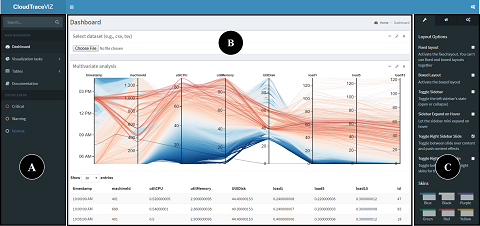 |
[W16]
CloudTraceViz: A Visualization Tool for Tracing Dynamic Usage of Cloud Computing
Resources Vinh Nguyen, Tommy Dang The 3rd Industry/University Joint International Workshop on Data-Center Automation, Analytics, and Control (DAAC) DAAC 2019: 22 November 2019, Denver, CO, USA |
|---|
| 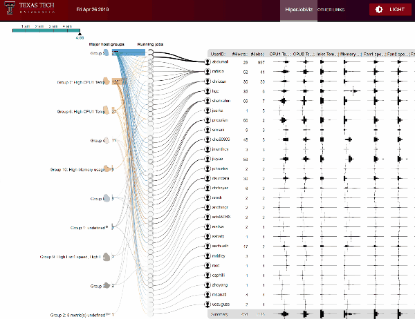 |
[W15]
HiperJobViz: Visualizing Resource Allocations in High-Performance Computing Center via
Multivariate Health-Status Data Tommy Dang, Ngan Nguyen, Jon Hass The 3rd Industry/University Joint International Workshop on Data-Center Automation, Analytics, and Control (DAAC) DAAC 2019: 22 November 2019, Denver, CO, USA |
|---|
| 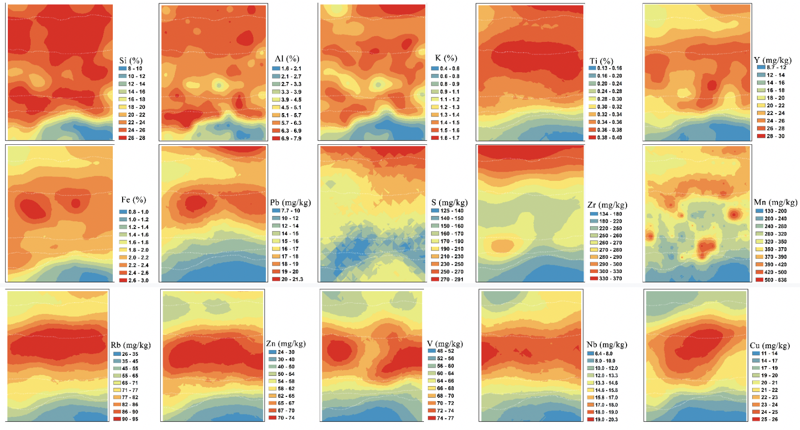 |
[J3]
Enhanced soil profile visualization using portable X-ray fluorescence (PXRF) spectrometry Fujun Sun, Noura Bakr, Tommy Dang, Vung Pham, David C. Weindorf, Zhuodong Jiang, Hualei Li, Qiu-Bing Wang Geoderma |
|---|
|
[J2]
Multisensory Integration of Visual and Auditory Signals during Second Language
Learning Guangsheng Liang; Vinh Nguyen; Kimi Nakatsukasa; Aaron Braver; Tommy Dang; Miranda Scolari Journal of Vision Journal of Vision, by the Association for Research in Vision and Ophthalmology (ARVO) |
|---|
| 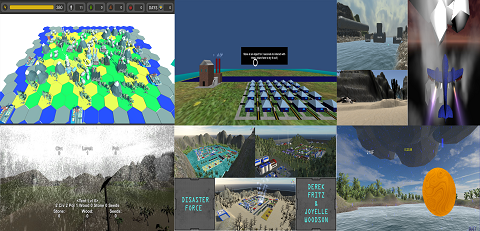 |
[J1]
Learners' Technological Acceptance of VR Content Development: A Sequential 3-Part Use Case
Study of Diverse Post-Secondary Students Vinh T. Nguyen, Rebecca Hite and Tommy Dang International Journal of Semantic Computing IJSC |
|---|
| 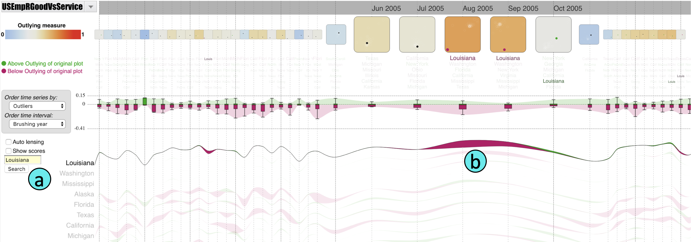 |
[C7]
Outliagnostics: Visualizing Temporal Discrepancy in Outlying Signatures of Data
Entries Vung Pham and Tommy Dang Visualization in Data Science VDS 2019: October 20th, 2019, Vancouver, Canada |
|---|
| 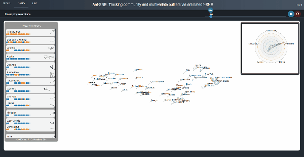 |
[C6]
Ant-SNE: Tracking Community Evolution of Multivariate Outliers via Animated t-SNE Ngan Nguyen and Tommy Dang International Symposium on Visual Computing ISVC: October 7-9, 2019, Lake Tahoe, Nevada, USA |
|---|
| 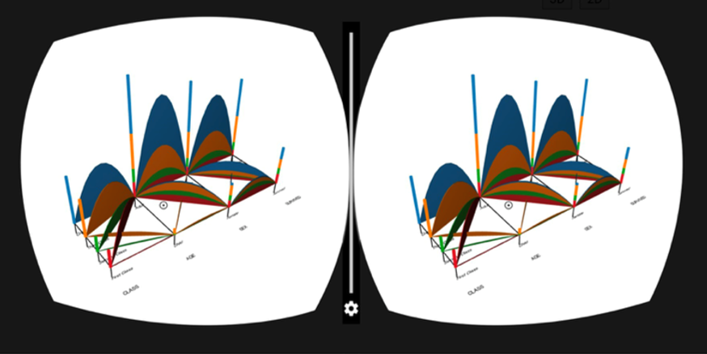 |
[C5]
VRParaSet: A Virtual Reality model for visualizing multidimensional data Ngan Nguyen, Lino Virgen and Tommy Dang International Symposium on Visual Computing ISVC: October 7-9, 2019, Lake Tahoe, Nevada, USA |
|---|
| 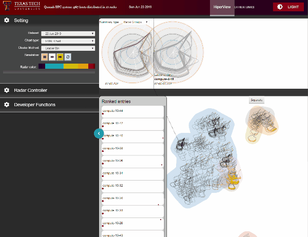 |
[S6]
HiperViz: Interactive visualization of CPU Temperatures in High Performance Computing
Centers Ngan Nguyen, Tommy Dang PEARC '19 Proceedings of the Practice and Experience in Advanced Research Computing on Rise of the Machines PEARC '19: July 28 - August 1, 2019 Chicago, IL |
|---|
| 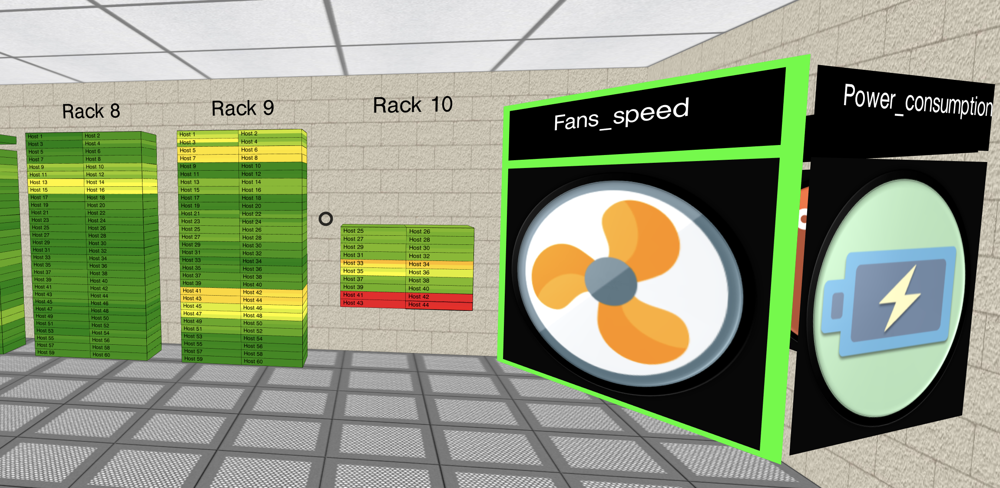 |
[S5]
HiperVR: A Virtual Reality model for High Performance Computing Systems Ngan Nguyen, Lino Virgen, and Tommy Dang Practice & Experience in Advanced Research Computing Conference Series PEARC19: July 28 - August 1, 2019 Chicago, IL |
|---|
| 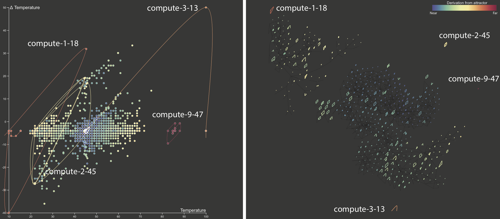 |
[W14]
SpacePhaser: Phase Space Embedding Visual Analytics Ngan Nguyen and Tommy Dang IEEE International Workshop on Deep Analysis of Data-Driven Applications DADA 2019 @ COMPSAC, July 15, Milwaukee, WI |
|---|
| 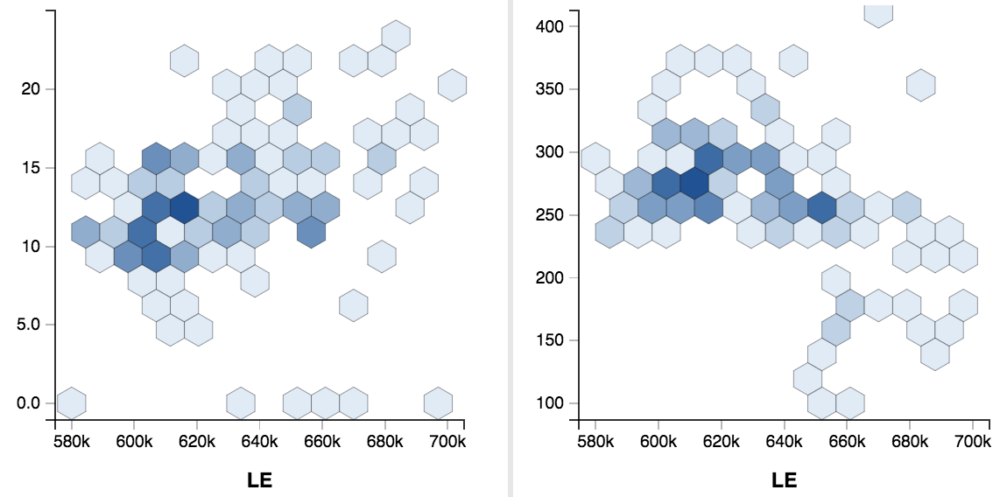 |
[W13]
SOAViz: Visualization for Portable X-ray Fluorescence soil profiles Vung Pham and Tommy Dang (Best paper award) The Visualization in Environmental Sciences EnvirVis 2019 @ EuroVis |
|---|
| 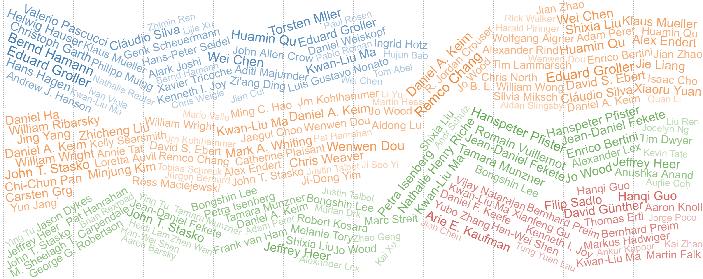 |
[S4]
WordStream: Interactive Visualization for Topic Evolution Tommy Dang, Huyen Nguyen, and Vung Pham 21st EG/VGTC Conference on Visualization EuroVis 2019 , June 3, Porto, Portugal |
|---|
| 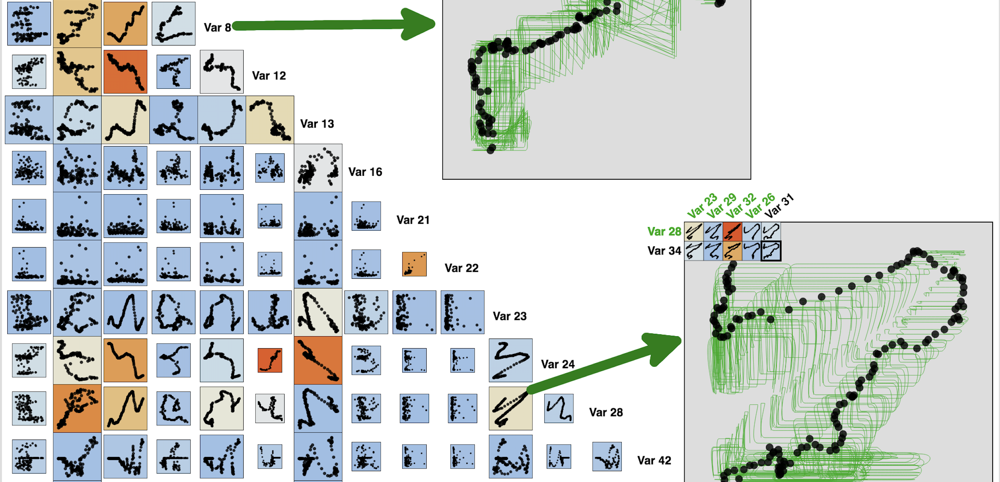 |
[C4]
FSelector: Variable Selection Using Visual Features Tommy Dang The 45th annual conference on computer graphics, visualization and human-computer interaction Graphics Interface (GI) 2019, May 28, Kingston, Canada |
|---|
| 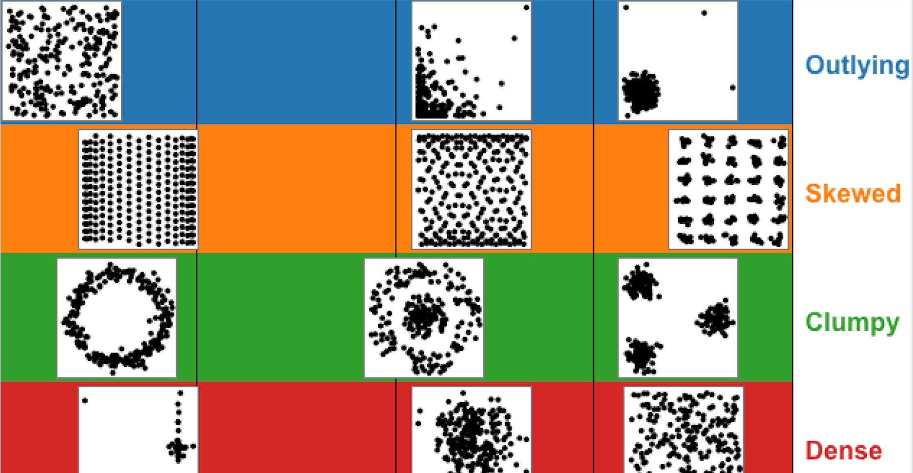 |
[C3]
Visualizing Multidimensional Health Status of Data Centers Tommy Dang Lecture Notes in Computer Science book series (LNCS, volume 11027) Programming and Performance Visualization Tools |
|---|
2018
| 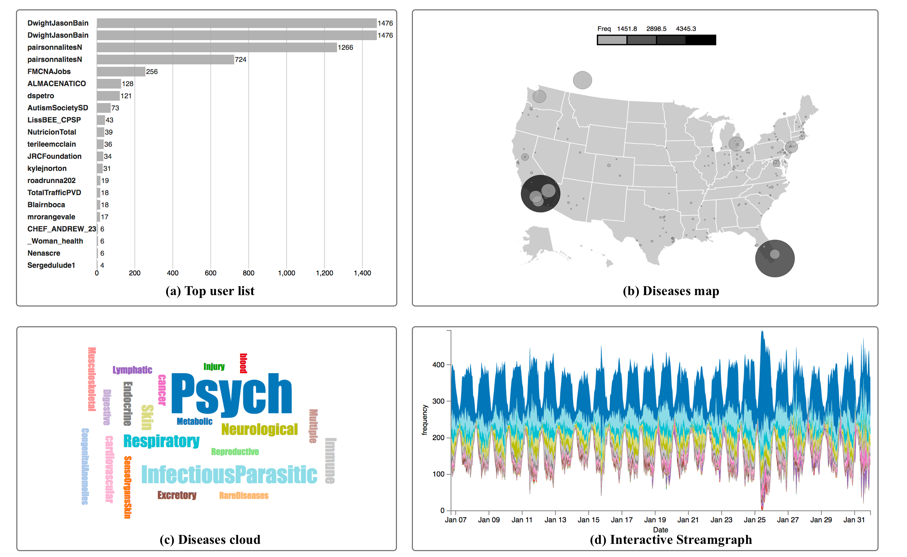 |
[W12]
HealthTvizer: Exploring Health Awareness in Twitter Data through Coordinated Multiple
Views Tommy Dang, Sonia Baee, Ngan Nguyen, and Vung Pham The 2nd International Workshop on Big Social Management and Analysis BSMDMA Workshop @ IEEE BigData 2018 |
|---|
| 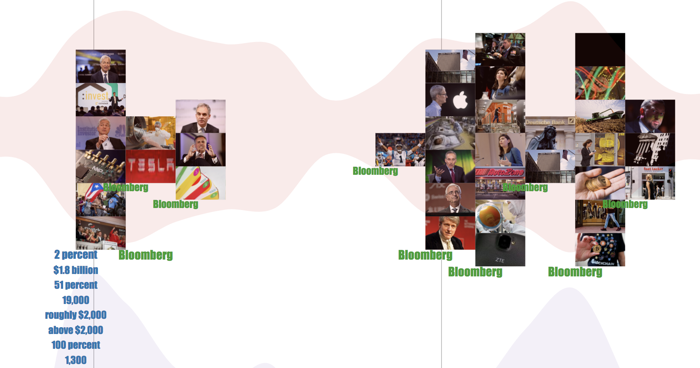 |
[W11]
FinanViz: Visualizing Emerging Topics in Financial News Ngan Nguyen, Vung Pham, Vinh Nguyen, and Tommy Dang The 2nd International Workshop on Big Data for Financial News and Data Financial News 2018 |
|---|
|
|
[W10]
UFO_Tracker: Visualizing UFO sightings Vinh Nguyen and Tommy Dang The 3rd International Workshop on Application of Big Data for Computational Social Science ABCSS Workshop @ IEEE BigData 2018 |
|---|

|
[W9]
IoTViz: Visualizing Emerging Topics in the Internet of Things Vung Pham, Vinh Nguyen, and Tommy Dang Big Data Engineering and Analytics in Cyber-Physical Systems BigEACPS'18 |
|---|
| 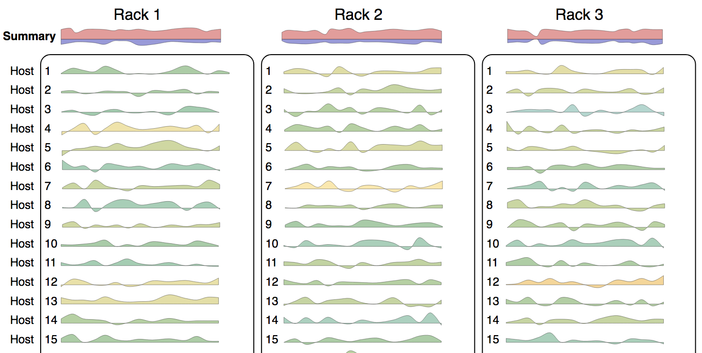 |
[W8]
HPCViz: Visualizing and Monitoring Health Status of High Performance Computing
Systems Tommy Dang, Vinh Nguyen, Vung Pham, Ghazanfar Ali, Yong Chen The 2nd International Industry/University Workshop on Data-center Automation, Analytics, and Control DAAC 2918 |
|---|

|
[C2]
CVExplorer: Multidimensional Visualization for Common Vulnerabilities and Exposures Vung Pham and Tommy Dang IEEE International Conference on Big Data IEEE Big Data 2018: Dec 10-13, Seattle, WA |
|---|
| 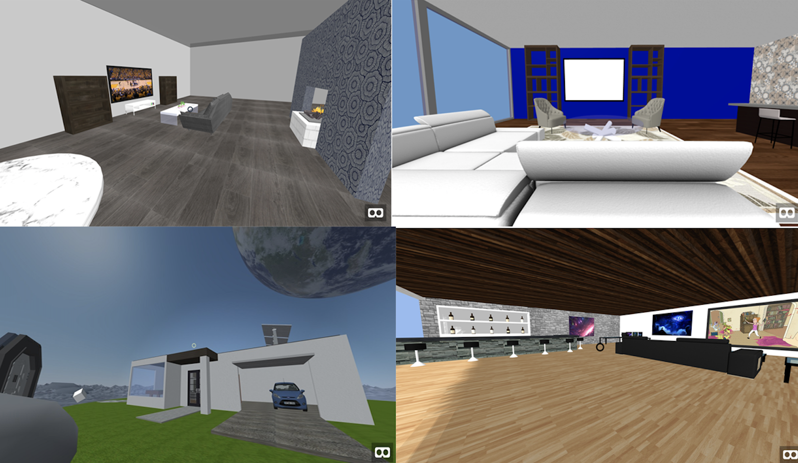 |
[C1]
Web-based Virtual Reality development in classroom: From learner's perspectives Vinh Nguyen and Tommy Dang IEEE International Conference on Artificial Intelligence and Virtual Reality AIVR 2018 |
|---|
| 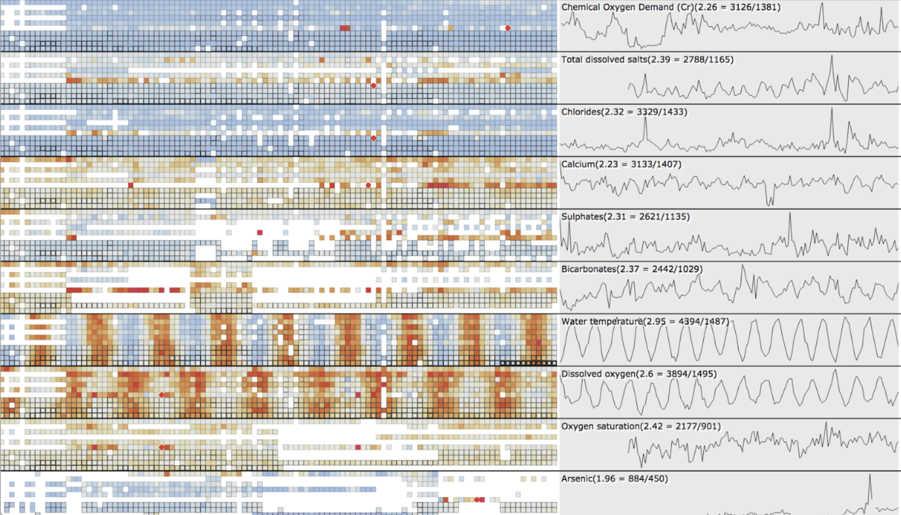 |
[A2]
Award: Strong Support for Exploratory Analysis Vung Pham and Tommy Dang VAST Challenge 2018: Mini-Challenge 2 VAST 2018 |
|---|
| 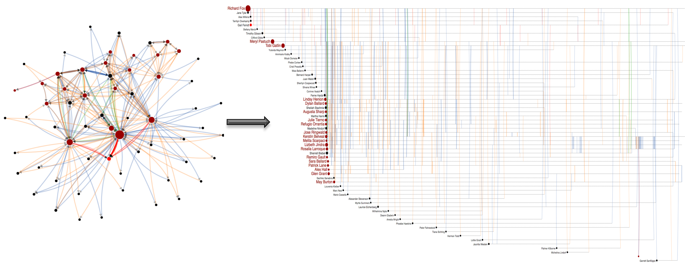 |
[A1]
Honorable Mention: Representation of Small-Scale Temporal Patterns Tommy Dang and Vung Pham VAST Challenge 2018: Mini-Challenge 3 VAST 2018 |
|---|
| 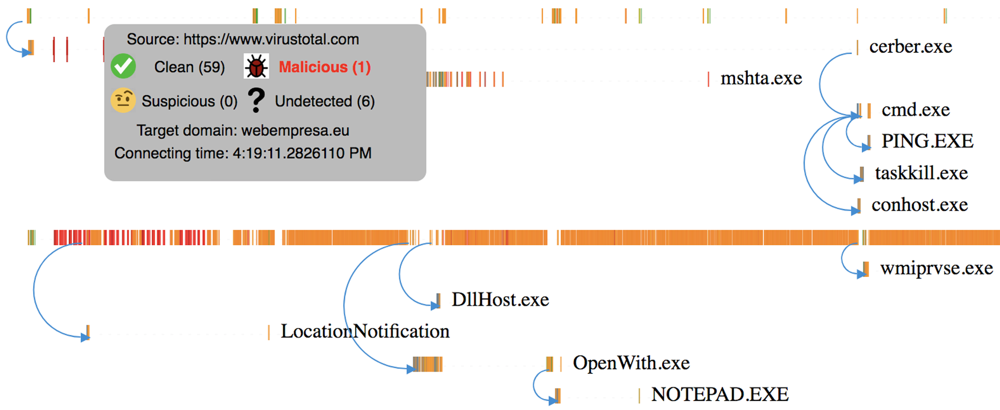 |
[S3]
MalViz: An Interactive Visualization Tool for Tracing Malware Vinh Nguyen, Akbar Siami Namin, Keith S. Jones, and Tommy Dang ACM SIGSOFT International Symposium on Software Testing and Analysis ISSTA 2018 |
|---|
| 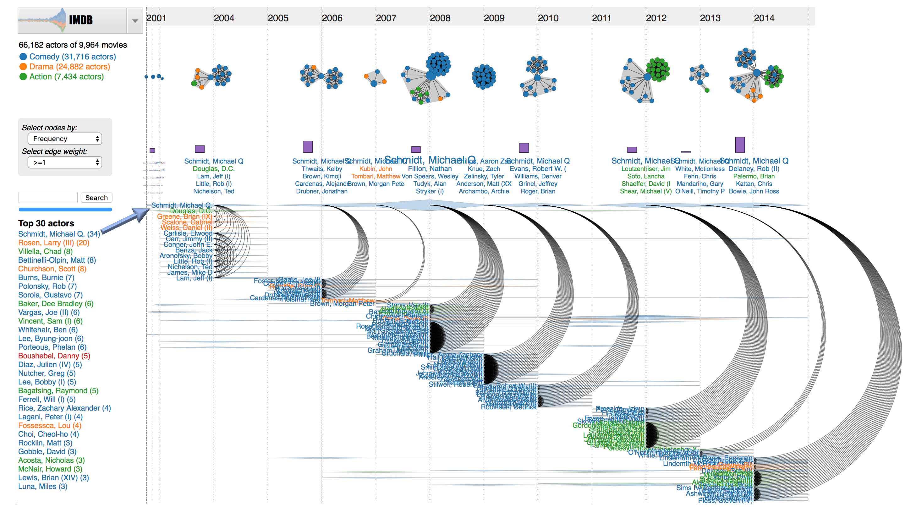 |
[W7]
ComModeler: Topic Modeling Using Community Detection Tommy Dang and Vinh Nguyen The 9th international EuroVis workshop on Visual Analytics EuroVA 2018 |
|---|
| 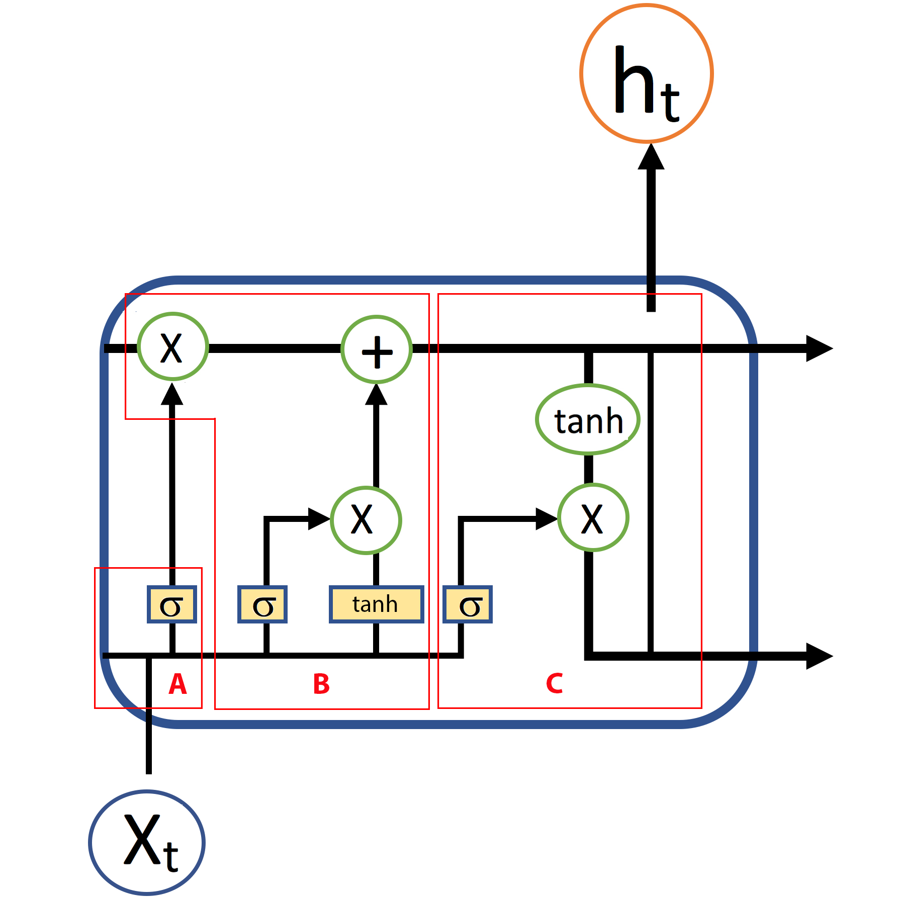 |
[W6]
Predict Saturated Thickness using TensorBoard Visualization Vinh Nguyen, Fang Jin, and Tommy Dang The Visualization in Environmental Sciences EnvirVis 2018 |
|---|
2017
| 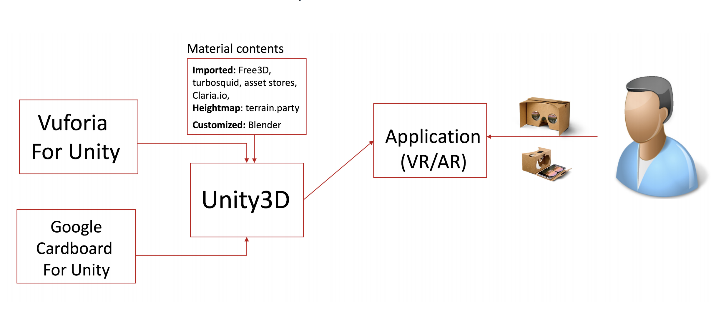 |
[W5]
Setting up virtual reality and augmented reality learning environment in Unity Vinh Nguyen and Tommy Dang IEEE Workshop on Virtual, Augmented and Mixed Reality in Education ISMAR 2017 |
|---|
| 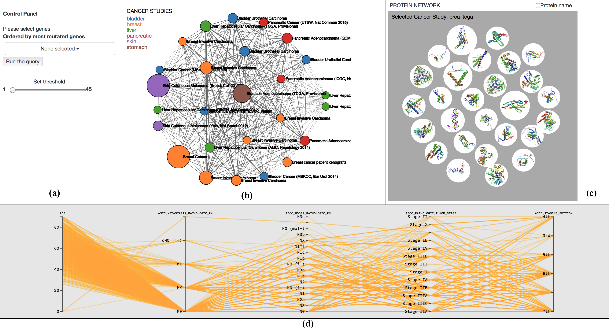 |
[W4]
CancerLinker: Explorations of Cancer Study Network Vinh Nguyen, Yasin Kabir, and Tommy Dang Visualization in Data Science at IEEE VIS 2017 VDS 2017 |
|---|
| 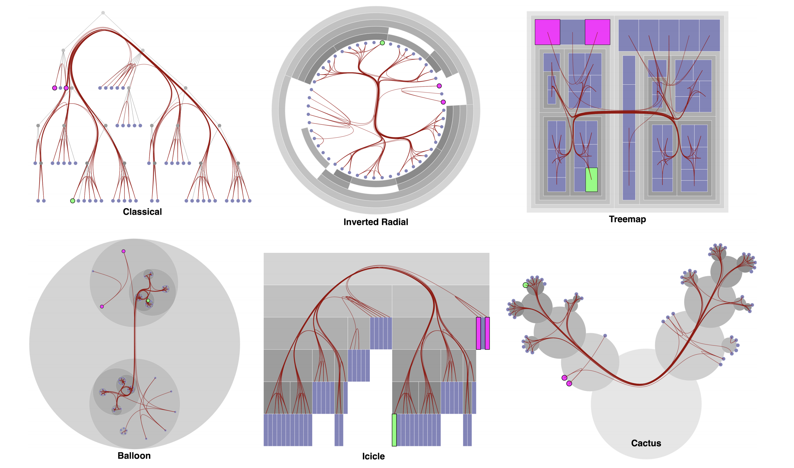 |
[W3]
A User Study of Techniques for Visualizing Structure and Connectivity in Hierarchical
Datasets Tommy Dang, Paul Murray, Ronak Etemadpour, and Angus G. Forbes Proceedings of the 3rd International Workshop on Visualization and Interaction for Ontologies and Linked Data VOILA 2017 |
|---|
| 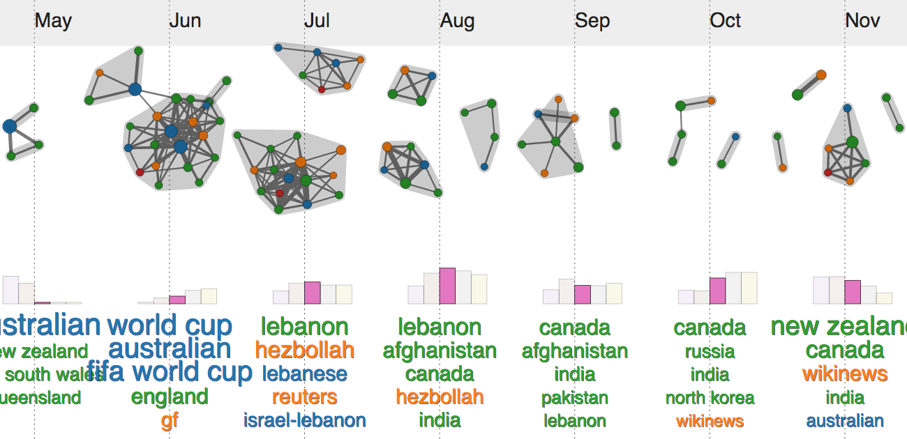 |
[W2]
DycomDetector: Discover topics using automatic community detections in dynamic
networks Tommy Dang , Vinh Nguyen, and Yasin Kabir KDD 2017 Workshop on Interactive Data Exploration and Analytics IDEA 2017 |
|---|

|
[W1]
STOAViz: Visualizing Saturated Thickness of Ogallala Aquifer. Tommy Dang, Long Hoang Nguyen, Abdullah Karim, and Venki Uddameri. The Visualization in Environmental Sciences EnvirVis 2017 |
|---|

|
[S2]
CactusTree: A Tree Drawing Approach for Hierarchical Edge Bundling. Tommy Dang and Angus Forbes. Proceedings of the 10th IEEE Pacific Visualization Symposium PacificVis 2017 |
|---|

|
[S1]
BioLinker: Bottom-up exploration of protein interaction network. Tommy Dang, Paul Murray, and Angus Forbes. Proceedings of the 10th IEEE Pacific Visualization Symposium PacificVis 2017 |
|---|